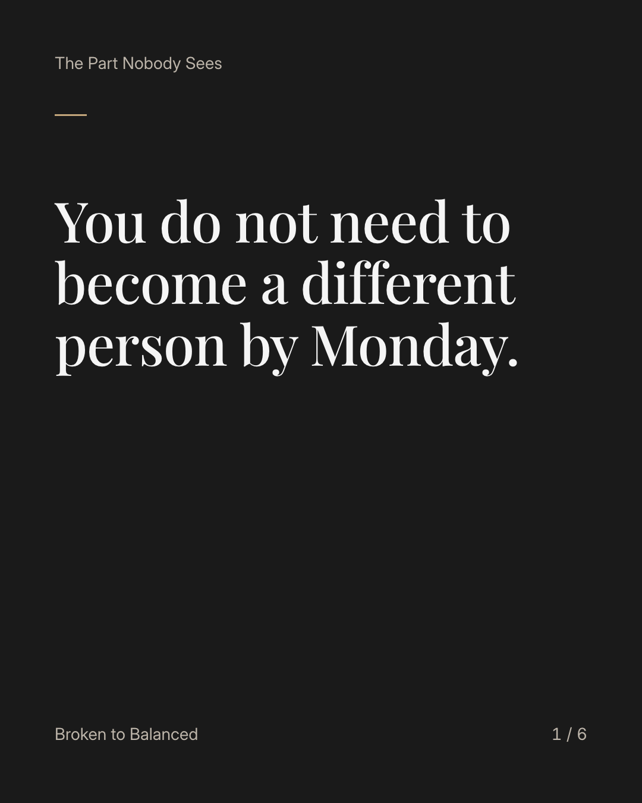
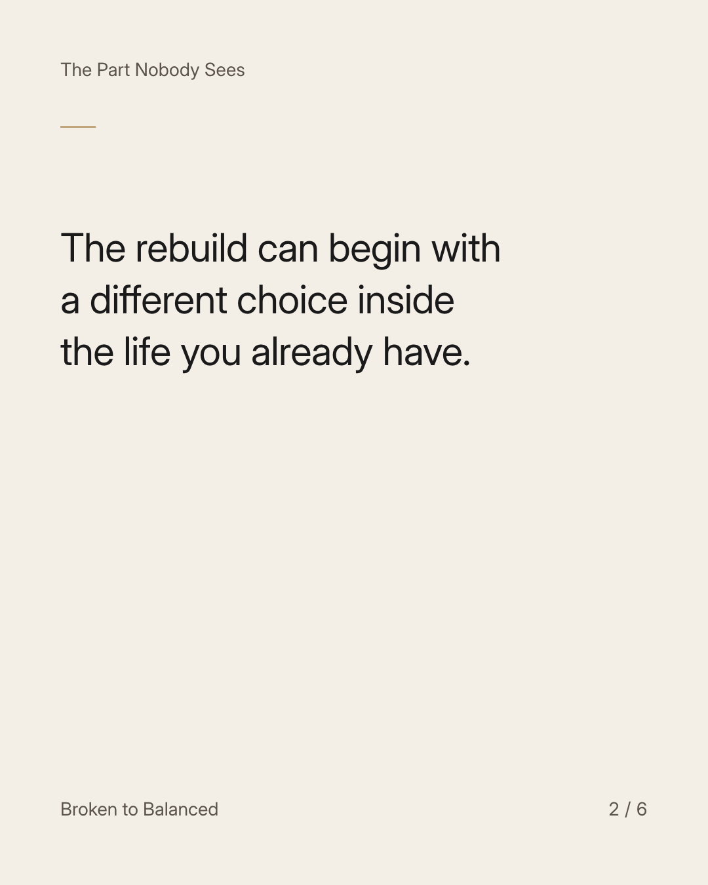
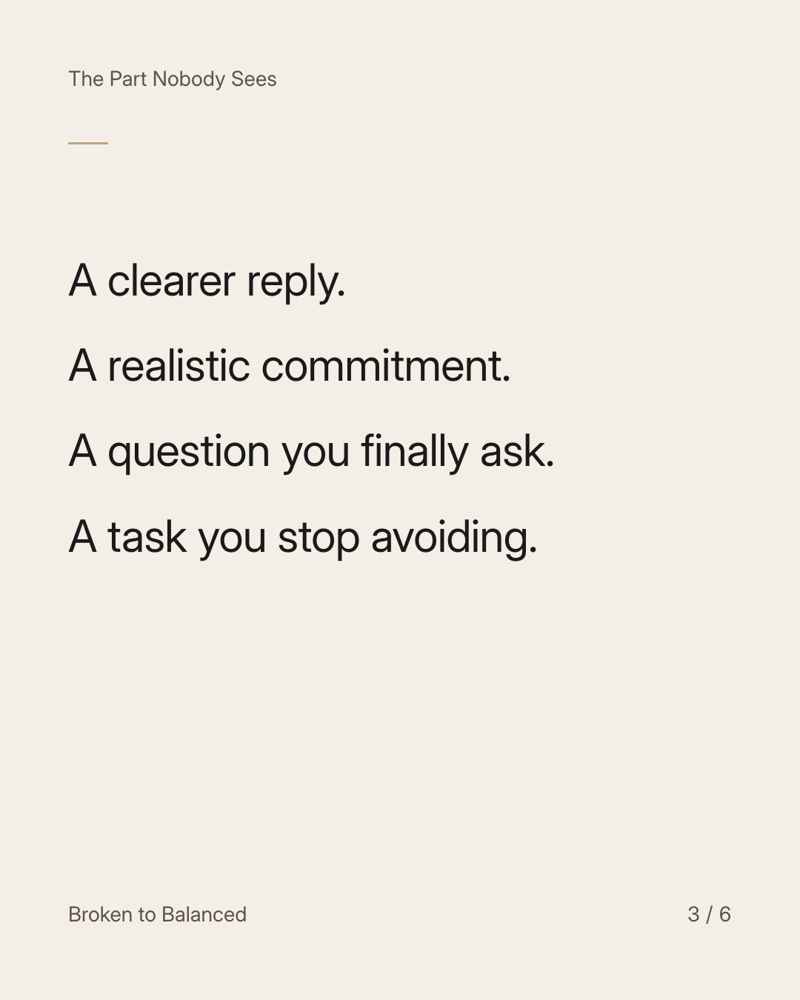
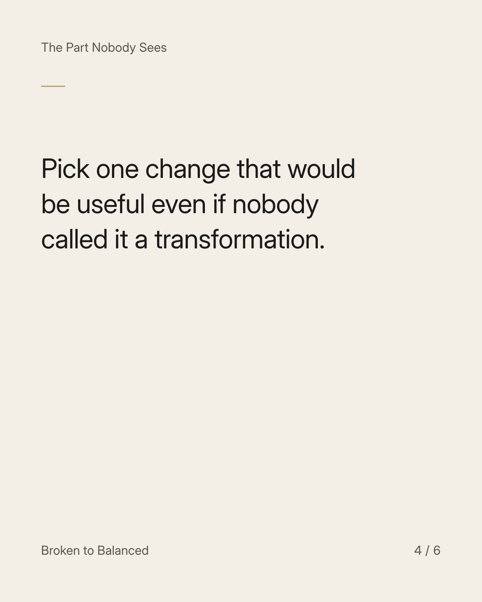
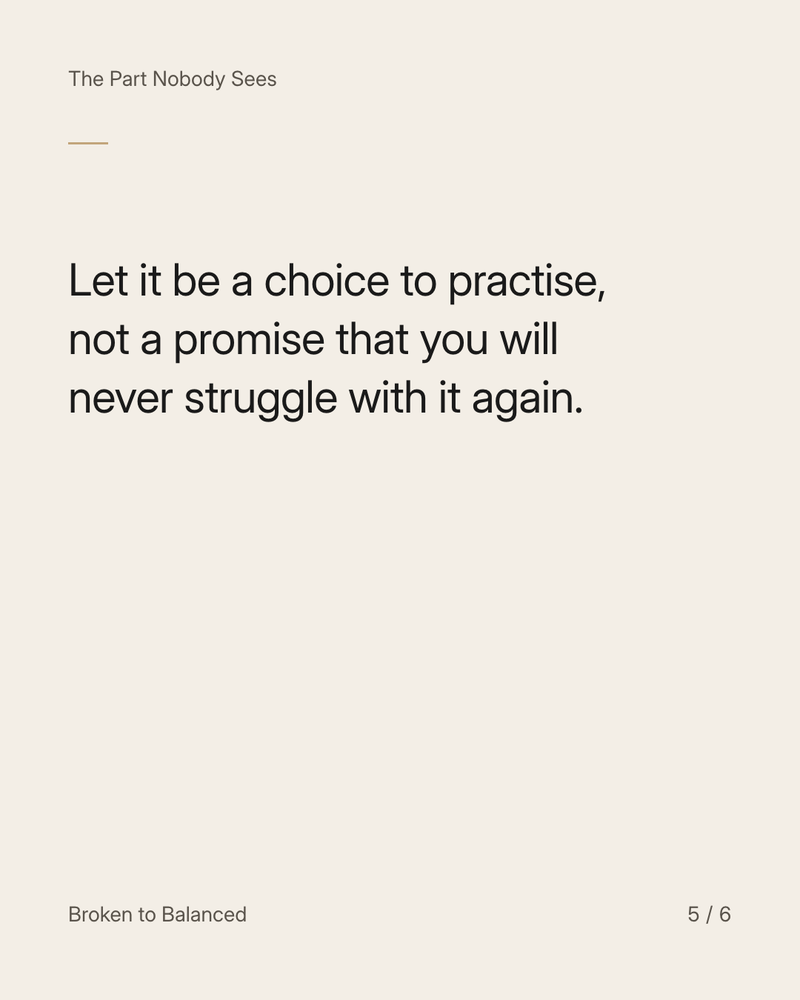
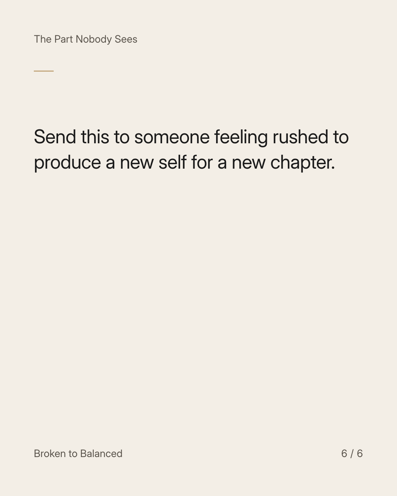

Exact text and accessibility text
You do not need to become a different person by Monday.
Slide 1 of 6. You do not need to become a different person by Monday.


Exact text and accessibility text
The rebuild can begin with a different choice inside the life you already have.
Slide 2 of 6. The rebuild can begin with a different choice inside the life you already have.


Exact text and accessibility text
A clearer reply. A realistic commitment. A question you finally ask. A task you stop avoiding.
Slide 3 of 6. A clearer reply. A realistic commitment. A question you finally ask. A task you stop avoiding.


Exact text and accessibility text
Pick one change that would be useful even if nobody called it a transformation.
Slide 4 of 6. Pick one change that would be useful even if nobody called it a transformation.


Exact text and accessibility text
Let it be a choice to practise, not a promise that you will never struggle with it again.
Slide 5 of 6. Let it be a choice to practise, not a promise that you will never struggle with it again.


Exact text and accessibility text
Send this to someone feeling rushed to produce a new self for a new chapter.
Slide 6 of 6. Send this to someone feeling rushed to produce a new self for a new chapter.
Exact caption
Plain-text fallback: select and copy the caption.